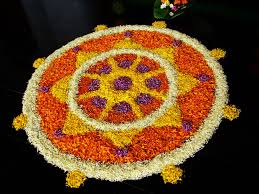
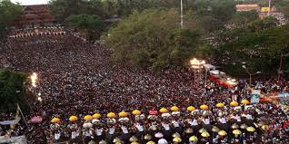
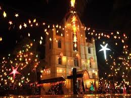
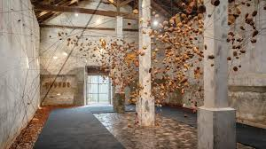
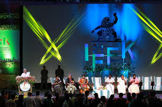
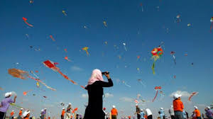

The festival season, the pride and joy of Kerala, is epitomised by the ferocious beats of the chenda (drums) emanating across the landscape. Elephants march across towns and the rivers surge with massive 100 feet long snake boats in a display that can only be experienced in an area renowned as God's Own Country. The entire State celebrates together as the land is covered in a plethora of lights and merriment.
Our festivals celebrate the traditions passed down by our ancestors. Be it Onam, Eid or Christmas, all of Kerala rejoices with one spirit to bring the entire coastal State to life. From seeing mystical figures come to life during Theyyam performances to strolling across various churches and mosques where the lights and displays are at their best during perunnals and memorials, every nook and cranny of our State has something to offer to each traveller.
From religious occasions to festivals for specific deities, Kerala is home to a great heritage of festivals. The festivals of Kerala personify the very spirit and essence of the land and these experiences will be forever etched in your heart.
Browse the Festival Calendar to know more about the festivals, their specialties and dates.
| Onam | Nehru Trophy Boat Race | Christmas |
|---|---|---|
| Kochi-Muziris Biennale | IFFK | Malabar International Kite Festival |
Onam is considered to be the state festival of Kerala and is marked as homage to Mahabali, the mythological Asura or demon king of ancient Kerala. The people of Kerala believe that Mahabali comes to his subjects on the day of Onam. The festival also has a social significance as it coincides with the harvest season which takes place during the months of August and September. Plenty of celebrations take place during the Onam festival.
The Nehru Trophy Boat Race named after Pandit Jawaharlal Nehru is conducted on the Punnamda Lake, near Alappuzha, on the second Saturday of August every year. On the day of this fiercely fought boat race, the tranquil lake front is transformed into a sea of humanity with an estimated two lakh people, including tourists from abroad for watching it. For the people of each village in Kuttanad, a victory at this race for their village boat is something to be celebrated for months to come.
Department of Tourism, Government of Kerala, Park View, Thiruvananthapuram, Kerala, India - 695 033
Phone: +91 471 2321132, E-mail: info@keralatourism.org.
All rights reserved © Kerala Tourism 2017.
Developed & Maintained by jmv.